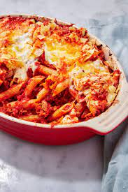

Tuna Pasta dish

Ingredients:
- 1 pack of pasta
- Olive oil
- Butter
- Onion
- 3 cans of tuna
- Whipping cream
- Salt and pepper
- Nutmeg
- Parmesan Cheese
Directions:
- Bring a large pot of lightly salted water to a boil. Add penne and cook, stirring occasionally, until tender yet firm to the bite, about 11 minutes. Drain and toss pasta with 1 tablespoon olive oil.
- Preheat the oven to 350 degrees F (175 degrees C). Grease an ovenproof baking dish.
- While penne is cooking, melt butter in a large saucepan over medium heat. Add onion and cook, stirring often, until soft and translucent, about 5 minutes. Add tuna and cook for 2 minutes. Pour heavy cream over tuna and season with salt, pepper, and nutmeg. Add penne and toss well. Transfer to the prepared baking dish and cover with Parmesan cheese.
- Bake in the preheated oven until the top is golden brown, 15 to 20 minutes.